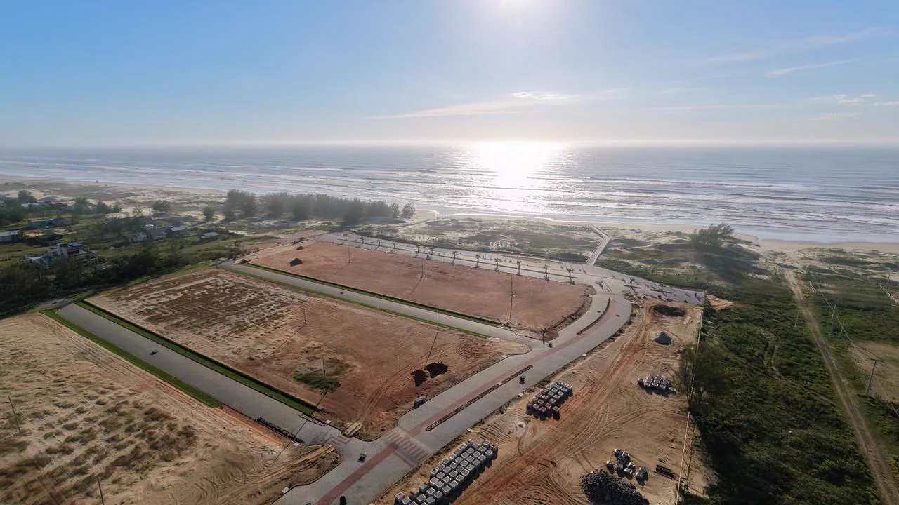
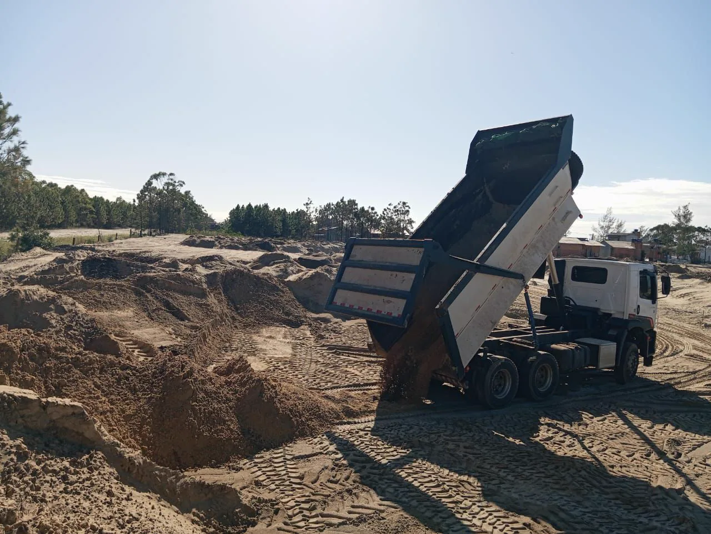
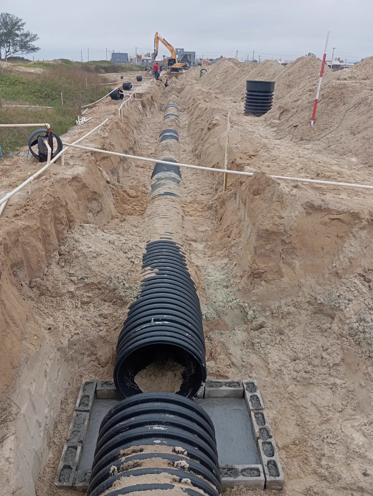
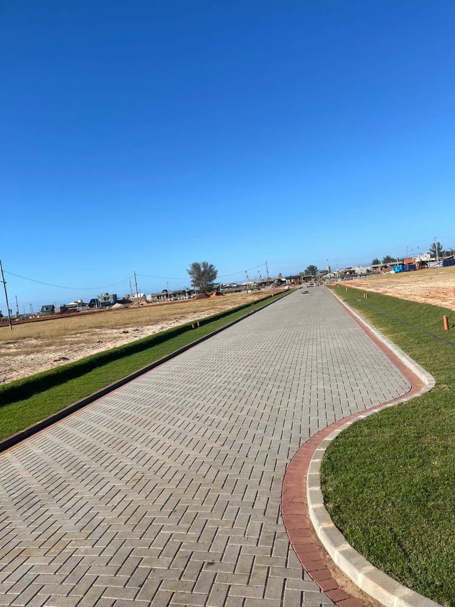

Terraplenagem
Movimentação de solo e conformação da área para receber as etapas seguintes.

Nossa atuação
Da preparação do terreno ao espaço urbanizado, cada frente tem um papel no resultado final.
Visão integrada
Uma urbanização bem executada depende de planejamento entre as frentes de obra. O trabalho começa na base, passa pelas redes e segue até as vias e os espaços externos.
As fotografias desta página são registros reais do Portofino e ilustram as frentes documentadas nesse projeto.
O que fazemos
Movimentação de solo e conformação da área para receber as etapas seguintes.
Implantação de sistemas enterrados, incluindo água e esgoto, conforme o projeto.
Soluções para conduzir as águas pluviais e proteger vias e terrenos.
Execução de vias e pisos para dar conexão e circulação ao empreendimento.
Integração das vias, espaços externos e paisagem na implantação final.
Organização das frentes para que a execução siga uma sequência coerente.
Registros de campo



Registros de 2025. As imagens não representam necessariamente o estágio atual da obra.
Veja o projeto completoVamos conversar
Converse com a equipe sobre as necessidades da sua área.
Fale com a Monlote